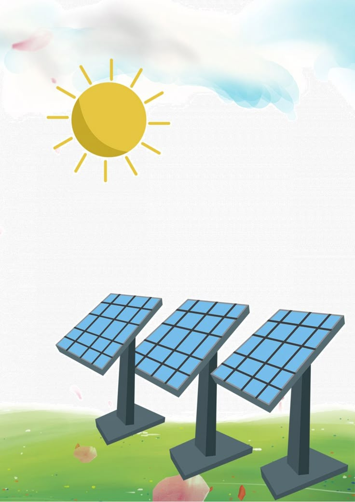

La historia de la energía solar se remonta a la antigüedad, cuando civilizaciones como los griegos y los romanos ya aprovechaban la luz del sol para calentar sus viviendas mediante la orientación de sus construcciones. Sin embargo, el desarrollo moderno de esta fuente de energía comenzó en el siglo XIX, cuando científicos como Alexandre Edmond Becquerel descubrieron el efecto fotovoltaico en 1839. Este descubrimiento sentó las bases para la creación de las primeras células solares, que evolucionaron significativamente en el siglo XX gracias a los avances en la física y la ingeniería. A partir de la década de 1950, con el uso de paneles solares en satélites espaciales, la tecnología fotovoltaica empezó a ganar protagonismo. Hoy en día, la energía solar es una de las principales fuentes renovables del mundo, impulsada por la necesidad de soluciones sostenibles frente al cambio climático.
